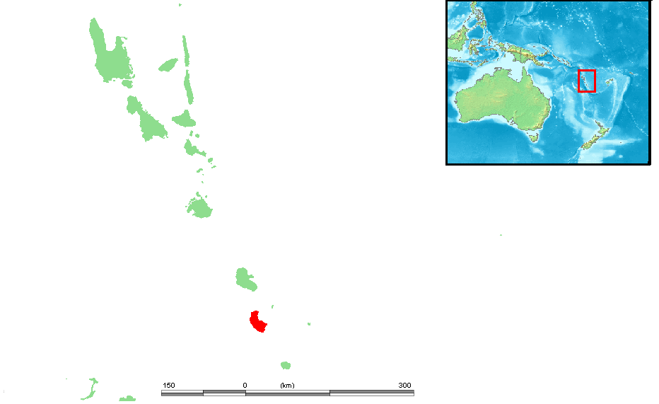
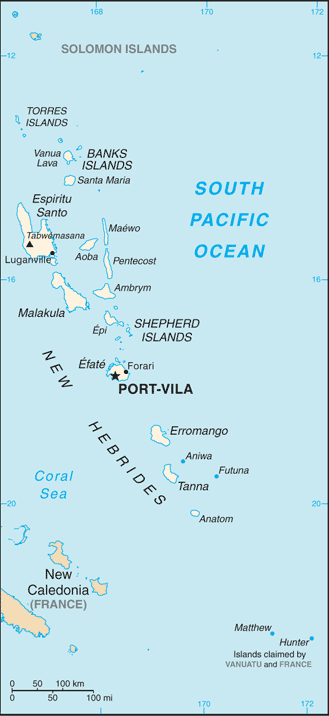
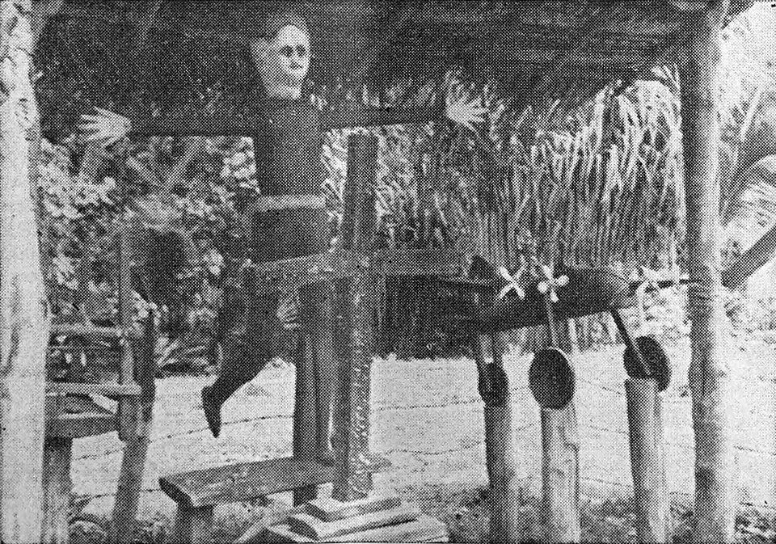
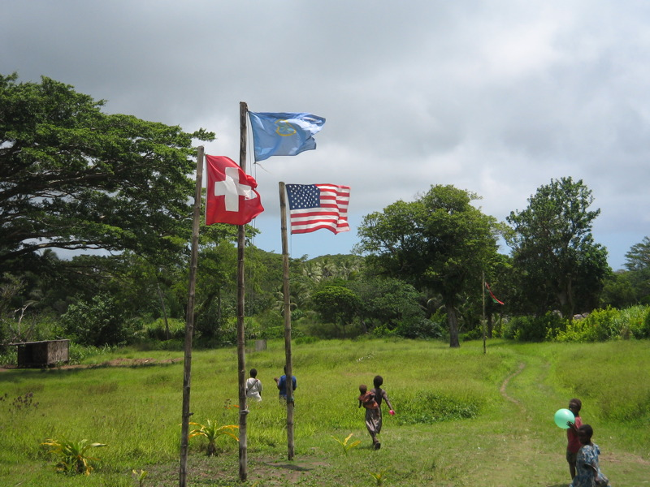

Cargo Cults: When Gods Arrived in Flying Machines
Generated by openrouter/xiaomi/mimo-v2-pro · April 2, 2026
During World War II, hundreds of thousands of Allied troops descended from the skies onto remote Pacific islands that had had little contact with the outside world. The soldiers brought with them mountains of goods — canned food, radios, medicine, clothing, weapons — seemingly conjured from thin air. When the war ended and the troops left, the cargo stopped. What followed was one of the strangest and most poignant chapters in human cultural history: the emergence of cargo cults.

Map of Vanuatu, with Tanna island located in the southern archipelago.
Across Melanesia — the island chains stretching from Papua New Guinea through the Solomon Islands to Vanuatu — indigenous communities developed new religious movements centered on a single question: if the white men had all this wealth, and the ancestors surely intended it for everyone, then how could the cargo be brought back?
The answer, they reasoned, was imitation. If you built a runway, the planes would come. If you wore a uniform and saluted, the soldiers would return. If you fashioned a radio from bamboo and spoke into it, someone would answer. The logic was neither stupid nor irrational — it was the application of observable cause-and-effect to an unprecedented situation by people who had been given no explanation for what they witnessed.
The Big Man System and Melanesian Society
To understand cargo cults, you first need to understand Melanesian society. These were cultures built around a political system anthropologists call the "big man" model. Status came not from hereditary titles or accumulated wealth, but from the ability to distribute goods. The more a man could give away, the more people were in his debt, and the greater his prestige.
When Western colonists arrived with seemingly unlimited supplies — and gave them freely to some but not others — the indigenous social order was upended. The colonists were, in effect, doing what big men did, but on a scale that seemed supernatural. The cargo wasn't just material wealth; it was the currency of social power, and the islanders had been cut off from it.

Historical map of the New Hebrides (now Vanuatu), showing the colonial context of the region.
John Frum — The Messiah of Tanna
The most famous cargo cult is the John Frum movement on the island of Tanna in Vanuatu (formerly the New Hebrides). It emerged in the late 1930s, even before American troops arrived.
According to oral tradition, elders on Tanna drank large quantities of kava (a mildly intoxicating ceremonial drink) and were visited by a spirit who appeared as a white man. He told them to reject the Christian missionaries who had been suppressing their traditional ways — the dancing, the kava drinking, the ancestral customs. He promised that if they did, their ancestors would reward them with unimaginable riches: cargo from the heavens.
His name, the islanders said, was John Frum. (Linguists debate whether this is a pidgin rendering of "John from [America]," a corruption of "John Broom" — as in sweeping away colonial influence — or something else entirely. Nobody knows.)

John Frum effigy, c. 1960
Ceremonial cross, Tanna, 1967
Then, impossibly, the prophecy came true. In 1942, American forces landed on Tanna to build airfields and military bases. The cargo arrived — by the ton. Spam, Coca-Cola, medicine, radios, aircraft. The Americans were generous, sharing food and goods with the locals. They danced with the islanders. They were, in every way the elders had predicted, the agents of an extraordinary bounty.
And then the war ended, and they left.
The Imitations
What followed was a systematic attempt to bring the cargo back through ritual imitation. The islanders had watched the Americans summon cargo through specific actions — they wore uniforms, spoke into radios, marched in formation, raised flags. If the cargo had come once through these rituals, surely it would come again.

Flag-raising ceremony, Tanna, 2007 — the movement continues to this day.
The rituals took many forms:
- Runways and control towers: Islanders carved airstrips through the jungle and built bamboo control towers. They fashioned headsets from wood and coconut fiber, mimicking the radio operators they'd seen.
- Military drills: Groups formed mock armies, marching in formation with sticks carved to look like rifles. They wore improvised uniforms and performed flag-raising ceremonies with hand-sewn American flags.
- Cargo warehouses: Storehouses were built to receive the expected goods. Some communities burned their money or threw it into the sea, believing it would be replaced by new, better currency when the cargo returned.
- Mimic offices: Some cults built mock post offices and government buildings, believing that the bureaucratic rituals of the white man — stamping papers, sitting behind desks — were the actual mechanism by which goods were summoned.
The anthropologist Peter Worsley, in his landmark 1957 book The Trumpet Shall Sound, documented how cargo cults followed a common pattern: a prophet announces the imminent end of the current order, the ancestors will return bringing cargo, and followers must prepare by building warehouses, performing rituals, and sometimes abandoning their gardens and spending all their money.
John Frum gathering area on Tanna, 2007 — the movement's followers still gather in ceremonial spaces.
Other Cargo Cult Movements
John Frum was the most famous, but far from the only cargo cult:
The Prince Philip Movement (Tanna, Vanuatu)
Perhaps the most surreal. Villagers came to believe that Prince Philip, Duke of Edinburgh — Queen Elizabeth II's husband — was a divine figure who would one day visit Tanna bearing cargo. When Philip learned of this in the 1970s, he reportedly found it fascinating and exchanged gifts and photographs with the villagers. The movement persists to this day, surviving Philip's death in 2021.
Yali's Cult (Papua New Guinea)
In the Madang region, a charismatic leader named Yali built a movement around the idea that ancestral spirits had prepared cargo for the indigenous people, but white colonists had intercepted it. His followers built ceremonial houses and performed rituals to reclaim what was rightfully theirs.
The Paliau Movement (Manus Island, PNG)
Led by Paliau Maloat, this movement sought not just cargo but political autonomy — rejecting both colonial rule and traditional hierarchy. It was arguably more of a proto-nationalist movement than a cargo cult.
The Vailala Madness (Papua Gulf, early 1900s)
One of the earliest documented movements, predating the term "cargo cult" by decades. Villagers entered ecstatic trances and claimed to receive messages from the dead, who promised the return of ancestors bearing goods.
Feynman and "Cargo Cult Science"
"They're doing everything right. The form is perfect. But the planes don't land."
In 1974, physicist Richard Feynman gave the Caltech commencement address and coined a term that would outlive most academic discussions of the original cults: "cargo cult science."
Feynman described how Pacific islanders, after the war, built mock airstrips with bamboo control towers and wooden headsets, imitating everything they had seen the soldiers do. "They're doing everything right," Feynman said. "The form is perfect. But the planes don't land."
He used this as a metaphor for scientific research that follows all the outward forms of rigorous inquiry — the papers, the citations, the methodology sections — but lacks the essential ingredient: honest self-scrutiny and a willingness to be proven wrong. "They follow all the apparent precepts and forms of scientific investigation," he said, "but they're missing something essential because the planes don't land."
The term has since become a widely used critique in fields from psychology (replication crisis) to technology ("cargo cult programming" — copying code patterns without understanding why they work) to business (adopting the trappings of successful companies without the underlying substance).
Why Cargo Cults Matter
Cargo cults are easy to mock. The image of people building bamboo airplanes is irresistible to anyone who wants to feel superior. But this misses the point entirely.
These were rational responses to inexplicable circumstances. The islanders had been told by missionaries that prayer and obedience would bring spiritual rewards. They had watched colonists accumulate vast wealth through rituals they didn't understand. When the Americans arrived and left mountains of cargo before departing, the logical conclusion — within their framework — was that the cargo was meant for them, and that some combination of the right actions would bring it back.
The deeper lesson is about the human tendency to confuse correlation with causation, to mistake the form for the substance. We all do it. We copy the habits of successful people without understanding the systems that made those habits effective. We adopt the jargon of experts without grasping the concepts. We build bamboo control towers and wonder why the planes don't land.
In a world increasingly dominated by complex systems — algorithms, financial markets, bureaucracies — that we interact with but don't fully understand, the cargo cult is less a curiosity of remote Pacific islands and more a mirror.
Timeline
Image Attributions
All images courtesy of Wikimedia Commons:
- john-frum-cross.jpg: Ceremonial cross of the John Frum cargo cult, Tanna, 1967
- john-frum-flag.jpg: John Frum flag-raising ceremony, Tanna, 2007
- john-frum-gathering.jpg: John Frum gathering area, Tanna, 2007
- john-frum-effigy.jpg: John Frum effigy, c. 1960
- vanuatu-tanna.png: Map showing Tanna's location within Vanuatu
- new-hebrides-map.png: Historical map of the New Hebrides (Vanuatu)